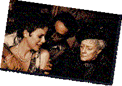

46th Berlin International
Film Festival (1996)
feature by Eddie Cockrell
Building a Better Berlin
"Let's wait, we'll see," Berlin Film Festival co-director Moritz de Hadeln murmured when told his main competition section could be the most well-received in years. And it was a few brief hours until he presented Emma Thompson with the European première of Sense and Sensibility to a capacity audience of VIPs at the massive festival flagship Zoo Palast Theater. A bystander could chalk up his answer to either serene acceptance or stark terror.
But from all indications during the early stages of the 46th edition of this huge festival (running February 15th to 26th in this great city which blankets itself not only in a slushy snow but all manner of poster and banner trumpeting the show), he need not be too worried yet.
Actually, de Hadeln's comment can be seen as a motto for the hardy filmgoer as well. Even though Berlin is universally acknowledged to be the best-run event of its type in the world, there's a certain amount of "let's wait" involved in an endeavor of this size: press credentials, phone, fax, queues, ticketing and the like take up a good chunk of time, but with good administration and good old trial and error, things seem to be running splendidly.
And if you're visiting the festival, "you'll see", no doubt - a quick skim of the half-dozen or so catalogues necessary for deciding what to catch yields some 263 titles in the main programs. Of course, that doesn't include the market section, which runs 400-plus films on 13 screens for 12 hours a day to interest buyers from around the globe, or the retrospective tributes to directors William Wyler and Elia Kazan, which feature all titles known to exist in each man's oeuvre.
Berlin's huge, all right, but the bear can be tamed. The main competition section is selected by de Hadeln, who has taken a lot of heat over the years for some seemingly eclectic and often unpopular choices. But even the notoriously tough German press should cut him some slack this year. Fifteen countries are represented with 29 entries - 14 of them world premières. Great Britain will sport Richard Loncraine's Richard III (pictured), Michael Hoffman's Restoration, Ang Lee's aforementioned Sense and Sensibility (a US co-production) and the hotly-anticipated world première of Stephen Frears' troubled Mary Reilly, starring Julia Roberts, John Malkovich and Glenn Close.
While the harshest competition criticism is usually reserved for the American choices - too few and there's no glamour, too many and the festival's sold its soul - this year's Hollywood lineup struck a fine balance that, as in all film programming, is part luck, part skill... and a larger part luck. Dead Man Walking, the world première of Paul Mazursky's Faithful, Get Shorty and l2 Monkeys will all compete for the Gold and Silver Bear prizes, while From Dusk Till Dawn, Holidays, Nixon and Toy Story will all have their first European showings out of competition (what's the difference? - who knows - it's all part of the complicated dance de Hadeln does with distributors). His choices have yielded Oscar gold as well, with seven of the competition entries garnering a total 24 nominations (an eighth Academy Award-nominated title, The Battle Over Citizen Kane, is showing elsewhere in the festival).
As this is filed, only two competition films have unspooled for the press. Sense and Sensibility got a warm round of applause at the press show Friday afternoon - although some scribes have groused at its gentility. Writer-star Emma Thompson wowed the VIP crowd at the subsequent première.
And on the subject of stars, there are lots here and more expected, including Julia Roberts, Danny De Vito, Ian McKellen, Bruce Willis, Robert Downey Jr. and Claudia Cardinale. Jodie Foster (pictured here directing on-set) is set to receive the special Berlinale Camera award at the first European showing (16th) of Home for the Holidays out of competition. Kazan is here for his tribute, as is Jack Lemmon for an official nod and showing of his Oscar-winning performance in John Avildsen's Save the Tiger (23rd).
William Wyler (pictured) is deceased but is represented in Berlin by his four grown children, including producer Catherine Wyler, who gave organizers access to her father's private collection and is serving on the jury for the competition section. The jury itself features Israeli actress Gila Almagor, Hong Kong director Ann Hui, German actor Jürgen Prochnow, British writer Ray Weldon and others, all serving under Jury president Nikita Mikhalkov, the Russian director of last year's Cannes prize winner Burnt by the Sun. Truly, the Berlin Festival is one of the largest concentrations of global film types in one place anywhere on the festival calendar (if not the largest).
Back to the competition: The festival catalogue describes the new Hungarian/German co-production Csajok (Bitches) as "a fragmented and bloody farce", and its emotionally fever-pitched story of three contemporary Hungarian women and their husband troubles is all that and more. Bitches is the third directorial effort from former actress Idilkó Szabó, following the critically acclaimed Damn Real (1987) and Child Murders (1993). Her all-over-the-map storytelling style won't be to all tastes, nor will the penchant for putting her three leading ladies through some pretty grueling paces involving spousal abuse (much of it seemingly played in part for laughs) and bodily fluids (uh, ditto).
But Szabó's point seems to be that each woman, despite setbacks large and small, rebounds and gives at least as good as she gets throughout the picture. "All the scenes actually happened, either to me or to my friends," she told one journalist, and while it must be left up to the individual moviegoer to assess her credibility on this volatile issue, Bitches is a bracing assault on the American moviegoing sensibility and a film sure to spark discussion - and controversy. In the end the press corps - perhaps still groggy from the opening night party that was still going sort of strong as 2:00am came and went - gave the movie respectful applause.